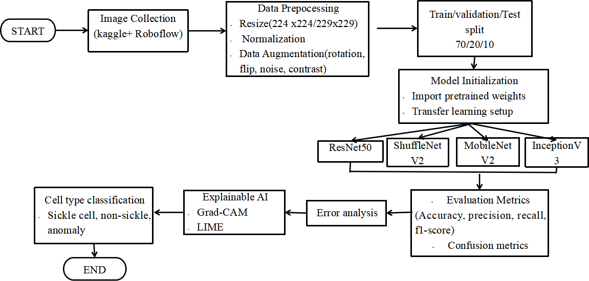
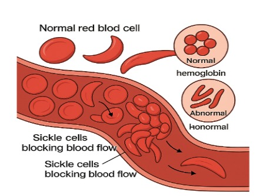
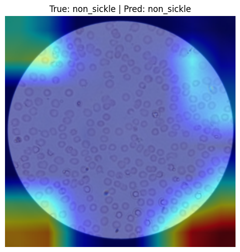
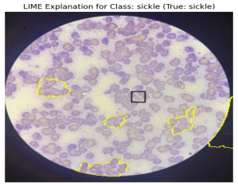
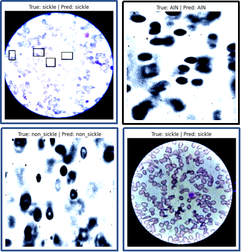

Companion dashboard for the paper AI-Powered Medical Imaging for Fast and Accurate Sickle Cell Detection. Everything here is computed in your browser from the paper's published numbers.
Grey bars show what the paper reports. Blue bars are recomputed from the confusion-matrix figures.
Rows are the true class, columns the predicted class. Shading is the share of each row (how often that true class was predicted as each label).
Edit any count in the 3×3 matrix (rows = actual, columns = predicted). Metrics update live. Start from a preset or enter your own counts, for example from a new evaluation run.
The paper states a 70 / 20 / 10 split. The reported counts give different proportions, shown below.
Stated: train 70% · validation 20% · test 10%
Reported counts (total ):
The paper gives class counts only for the Kaggle source. The Roboflow contribution is not broken down.
Select a step to read the details from the paper.

The paper uses Grad-CAM (where the network looks) and LIME (which superpixels drive a decision). These are the paper's example figures; they are illustrative and not a quantitative evaluation of explanation quality.




These are inconsistencies found while cross-checking the paper's text, tables and figures. They should be resolved before the results are cited as definitive.
non_sickle throughout.